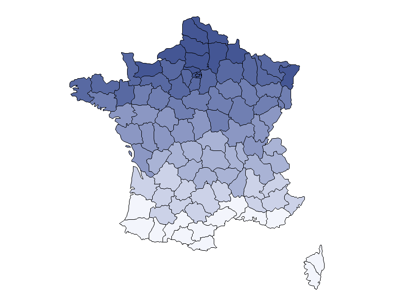
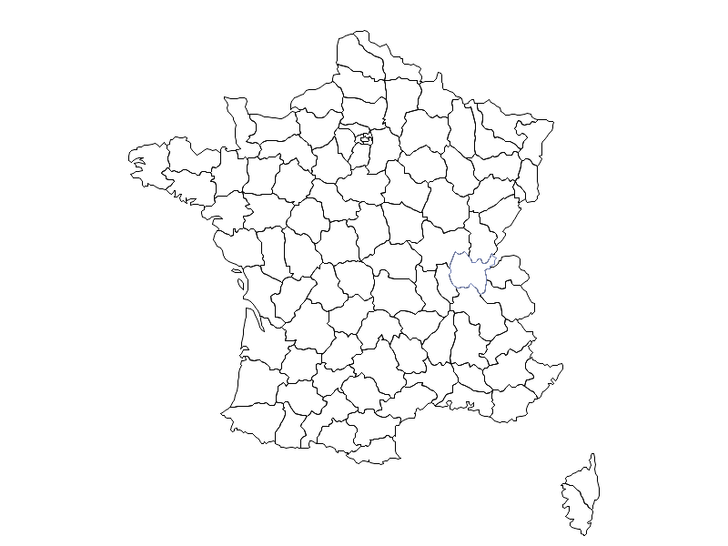
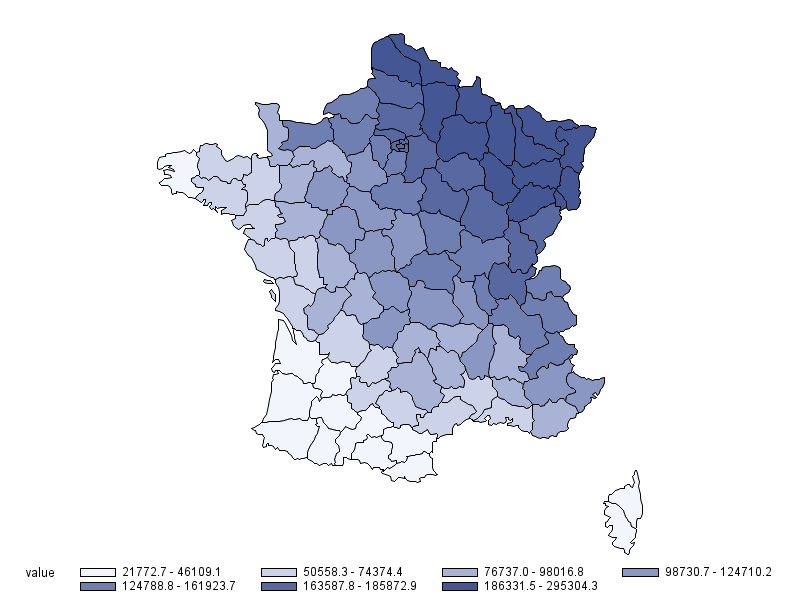
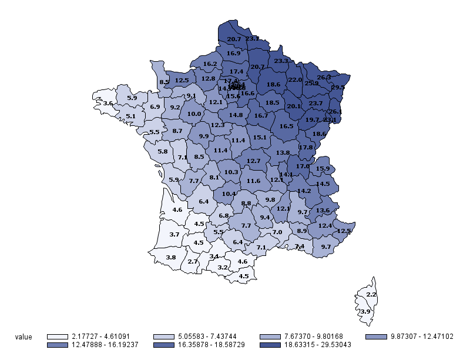

Plotting maps with SAS: labeled choropleth
Posted on lun. 03 septembre 2018 in SAS
For geographical data, SAS convenientely provides shapes for various countries in the maps library.
These can be used along with
proc gmap
to plot various data over maps.
Here we will simply plot a choropleth maps with text labels showing the numerical values in our dataset.
A nice and thorough tutorial about gmap can be found here.
Plotting a simple map
This is rather straightforward although not very useful by itself. Notice that we cannot really plot the map alone: we need to plot a choropleth (or a block, prism or surface plot) for a given variable (latitude here for the sake of example).
proc gmap data=maps.france map=maps.france all;
id Id;
choro lat / nolegend;
run;
quit;

To get a blank map we need to fiddle a bit with the parameters.
First define an empty
pattern
with pattern v=e.
Then we only load one observation from the table (obs=1) but still require gplot to plot
departement with missing data (all).
pattern v=e;
proc gmap data=maps.france(obs=1) map=maps.france all;
id Id;
choro lat / nolegend;
run;
quit;
* Cancel pattern;
pattern;

Plotting a simple choropleth
Now assuming there are some statistic we want to overlay on the previous map, we can plot a choropleth. Let us first define a fake dataset whose value we want to plot. This is closer to a real-life example where the shape data and the data we want to plot live in separate tables.
data map_data;
set maps.france;
by Id;
value = x * y / 10000;
if first.Id then output;
keep Id Value;
run;
The important bit here is that the Id value here must match those from maps.france.
We can then proceed with the plotting:
proc gmap data=map_data map=maps.france;
id Id;
choro Value;
run;
quit;

Note that replacing choro with block, prism or surface will result in other types of plots.
Plotting a choropleth with values at the center of departements
While colours allow to have a quick intuition of what is going on, it is common to display numerical values on top of maps to get a more detailed view of the statistic of interest. Dooing this with SAS requires more boilerplate code but can still be achieved without too much pain.
The shape of each departement is defined as a polygon, in essence a list of points with their \((x, y)\) coordinates. Therefore, in order to plot a values at the center of each departement, we need to compute the barycenter of a polygon, which is done by averaging the coordinates of its points.
* Average longitude of departements;
proc means data=maps.france mean noprint;
var x;
by Id;
output out=france_dpt_avg_lon mean=x;
run;
* Average latitude of departements;
proc means data=maps.france mean noprint;
var y;
by Id;
output out=france_dpt_avg_lat mean=y;
run;
* Departement centroids;
data france_dpt_proj_centroids;
merge france_dpt_avg_lon(keep=Id x)
france_dpt_avg_lat(keep=Id y);
by Id;
run;
We can then assign the label properties to each departement:
data pre_labels;
set france_dpt_proj_centroids;
retain
xsys ysys '2'
hsys '3'
position '5'
function 'label'
size 1.5
style "'Tahoma/bo'"
when 'a';
run;
Finally, we can merge the label properties and coordinates:
data labels;
merge pre_labels map_data(keep=Id Value);
by Id;
round_value = round(value, 0.1);
text = put(round_value, 6.1);
run;
Then all that is left is to plot with gmap:
proc gmap data=map_data map=maps.france;
id Id;
choro Value / annotate=labels;
run;
quit;

The result is still quite rough: the text for small departements in not readable, the legend could be improved, and the labels are not optimally placed - but considering SAS is not a GIS, this is still very much acceptable.
The full code can be found here.